Code
library(tidyverse)
library(ggridges)
library(gghalves)Example for Monday, October 7, 2024–Friday, October 11, 2024
For this example, we’re going to use historical weather data from the now-defunct Dark Sky about wind speed and temperature trends for downtown Atlanta (specifically 33.754557, -84.390009) in 2019. I downloaded this data using Dark Sky’s (now-retired-because-they-were-bought-by-Apple) API using the {darksky} package.
If you want to follow along with this example, you can download the data below (you’ll likely need to right click and choose “Save Link As…”):
This is a slightly cleaned up version of the code from the video.
First, we load the libraries we’ll be using:
Then we load the data with read_csv(). Here I assume that the CSV file lives in a subfolder in my project named data:
We’ll add a couple columns that we can use for faceting and filling using the month() and wday() functions from {lubridate} (which was loaded as part of {tidyverse}) for extracting parts of the date:
Now we’re ready to go!
We can first make a histogram of wind speed. We’ll use a bin width of 1 and color the edges of the bars white:
This is fine enough, but we can improve it by forcing the buckets/bins to start at whole numbers instead of containing ranges like 2.5–3.5. We’ll use the boundary argument for that. We also add scale_x_continuous() to add our own x-axis breaks instead of having things like 2.5, 5, and 7.5:
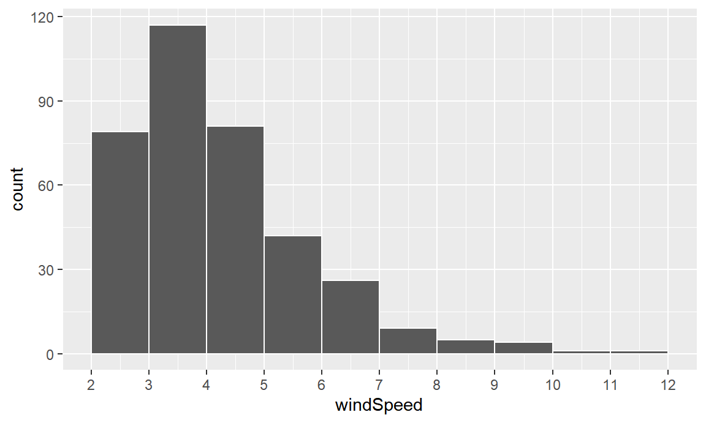
We can show the distribution of wind speed by month if we map the Month column we made onto the fill aesthetic:
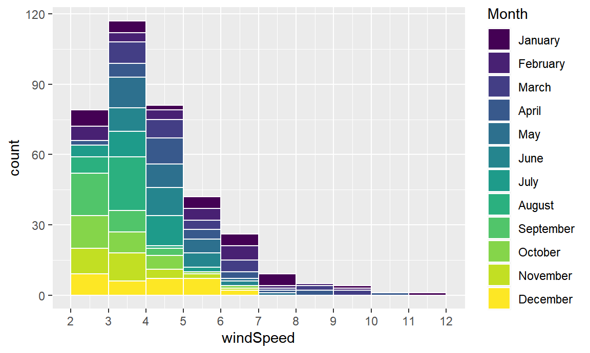
This is colorful, but it’s impossible to actually interpret. Instead of only filling, we’ll also facet by month to see separate graphs for each month. We can turn off the fill legend because it’s now redundant.
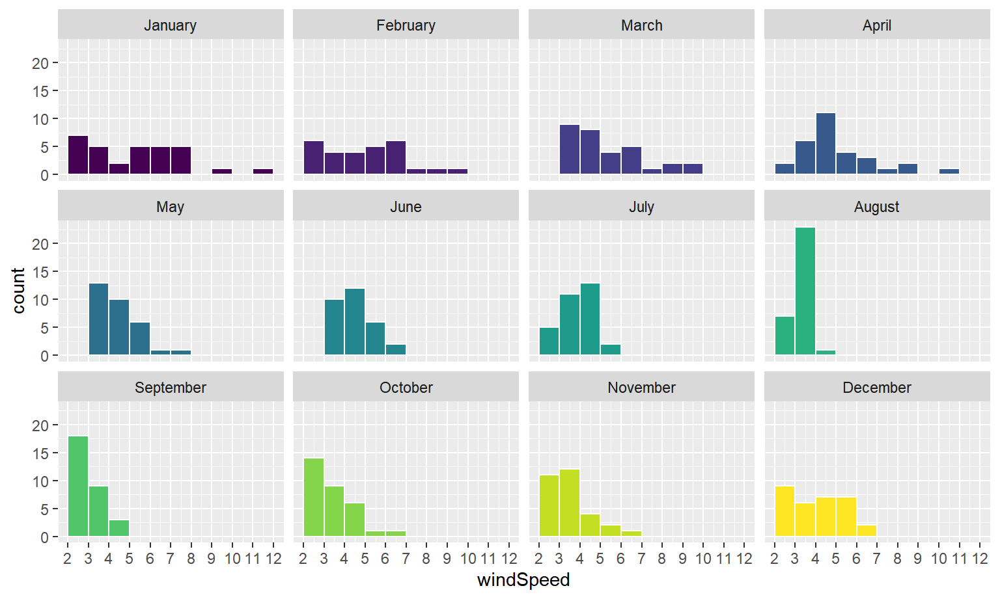
Neat! January, March, and April appear to have the most variation in windy days, with a few wind-less days and a few very-windy days, while August was very wind-less.
The code to create a density plot is nearly identical to what we used for the histogram—the only thing we change is the geom layer:
If we want, we can mess with some of the calculus options like the kernel and bandwidth:
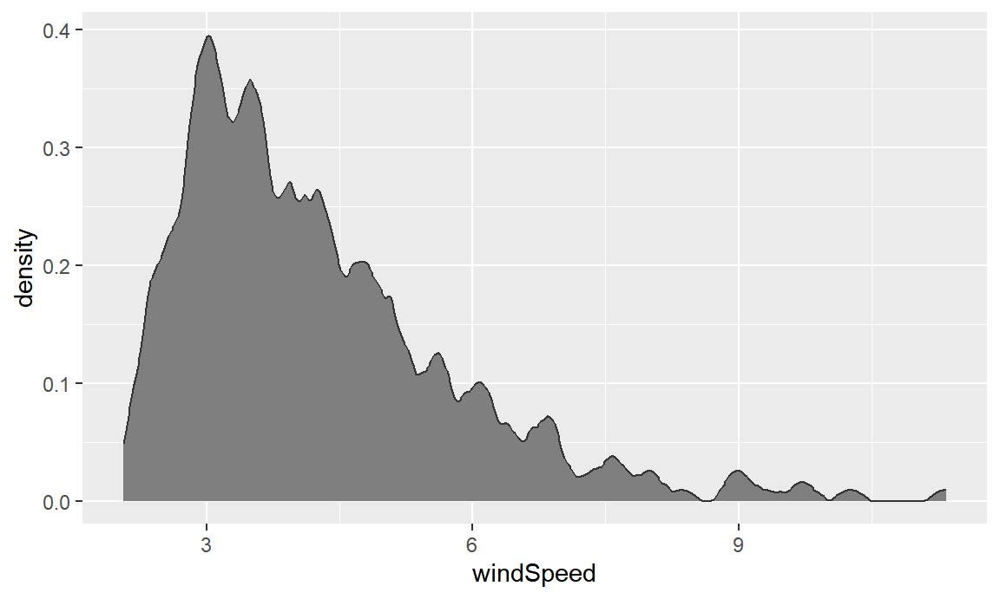
We can also fill by month. We’ll make the different layers 50% transparent so we can kind of see through the whole stack:
Even with the transparency, this is really hard to interpret. We can fix this by faceting, like we did with the histograms:
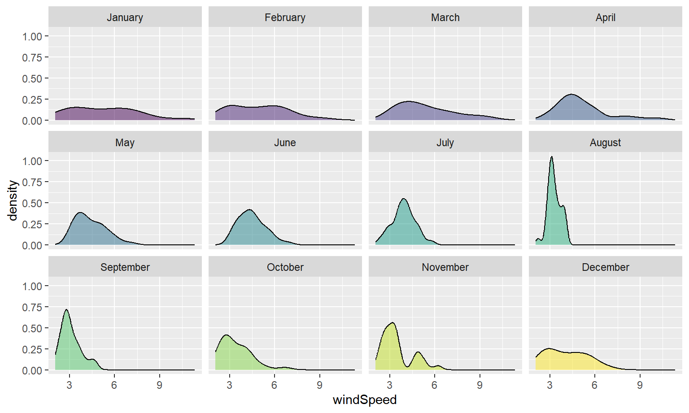
Or we can stack the density plots behind each other with {ggridges}. For that to work, we also need to map Month to the y-axis. We can reverse the y-axis so that January is at the top if we use the fct_rev() function:
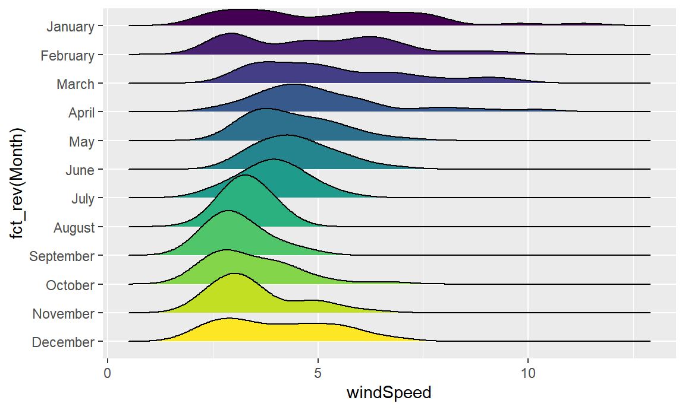
We can add some extra information to geom_density_ridges() with some other arguments like quantile_lines. We can use the quantiles argument to tell the plow how many parts to be cut into. Since we just want to show the median, we’ll set that to 2 so each density plot is divided in half:
Now that we have good working code, we can easily substitute in other variables by changing the x mapping:
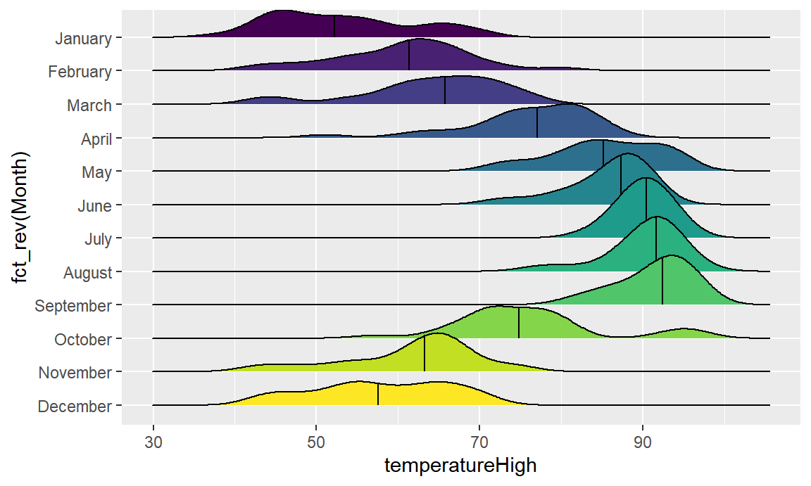
We can get extra fancy if we fill by temperature instead of filling by month. To get this to work, we need to use geom_density_ridges_gradient(), and we need to change the fill mapping to the strange looking after_stat(x), which is a neat ggplot trick that tells it to use the variable we mapped to the x-axis. For whatever reason, fill = temperatureHigh doesn’t work 🤷:
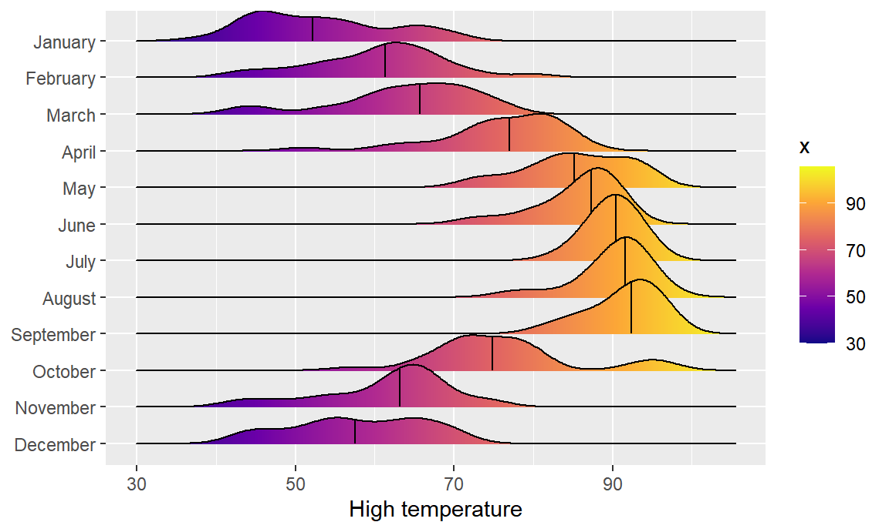
And finally, we can get extra fancy and show the distributions for both the high and low temperatures each month. To make this work, we need to manipulate the data a little. Right now there are two columns for high and low temperature: temperatureLow and temperatureHigh. To be able to map temperature to the x-axis and high vs. low to another aesthetic (like linetype), we need a column with the temperature and a column with an indicator variable for whether it is high or low. This data needs to be tidied (since right now we have a variable (high/low) encoded in the column name). We can tidy this data using pivot_longer() from {tidyr}, which was already loaded with library(tidyverse). In the Posit primers, you did this same thing with gather()—pivot_longer() is the newer version of gather():
weather_atl_long <- weather_atl %>%
pivot_longer(cols = c(temperatureLow, temperatureHigh),
names_to = "temp_type",
values_to = "temp") %>%
# Clean up the new temp_type column so that "temperatureHigh" becomes "High", etc.
mutate(temp_type = recode(temp_type,
temperatureHigh = "High",
temperatureLow = "Low")) %>%
# This is optional—just select a handful of columns
select(time, temp_type, temp, Month)
# Show the first few rows
head(weather_atl_long)
## # A tibble: 6 × 4
## time temp_type temp Month
## <dttm> <chr> <dbl> <ord>
## 1 2019-01-01 05:00:00 Low 50.6 January
## 2 2019-01-01 05:00:00 High 63.9 January
## 3 2019-01-02 05:00:00 Low 49.0 January
## 4 2019-01-02 05:00:00 High 57.4 January
## 5 2019-01-03 05:00:00 Low 53.1 January
## 6 2019-01-03 05:00:00 High 55.3 JanuaryNow we have a column for the temperature (temp) and a column indicating if it is high or low (temp_type). The dataset is also twice as long (730 rows) because each day has two rows (high and low). Let’s plot it and map high/low to the linetype aesthetic to show high/low in the border of the plots:
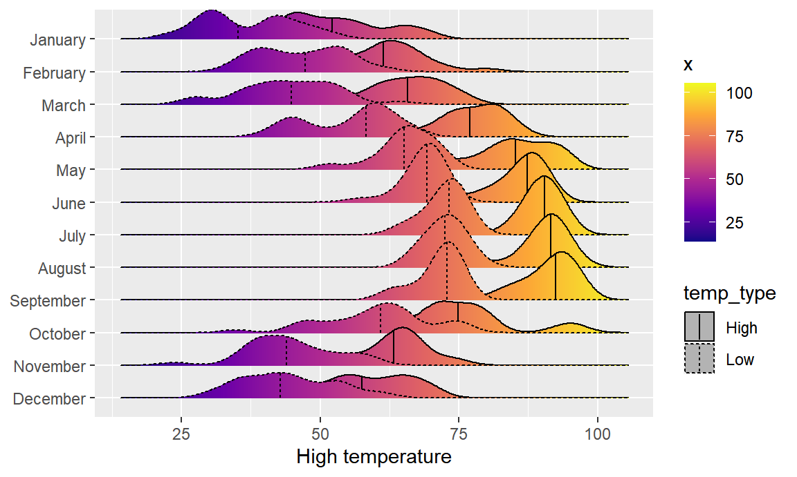
Super neat! We can see much wider temperature disparities during the summer, with large gaps between high and low, and relatively equal high/low temperatures during the winter.
Finally, we can look at the distribution of variables with box plots, violin plots, and other similar graphs. First, we’ll make a box plot of windspeed, filled by the Day variable we made indicating weekday:
We can switch this to a violin plot by just changing the geom layer and mapping Day to the x-axis:
With violin plots it’s typically good to overlay other geoms. We can add some jittered points for a strip plot:
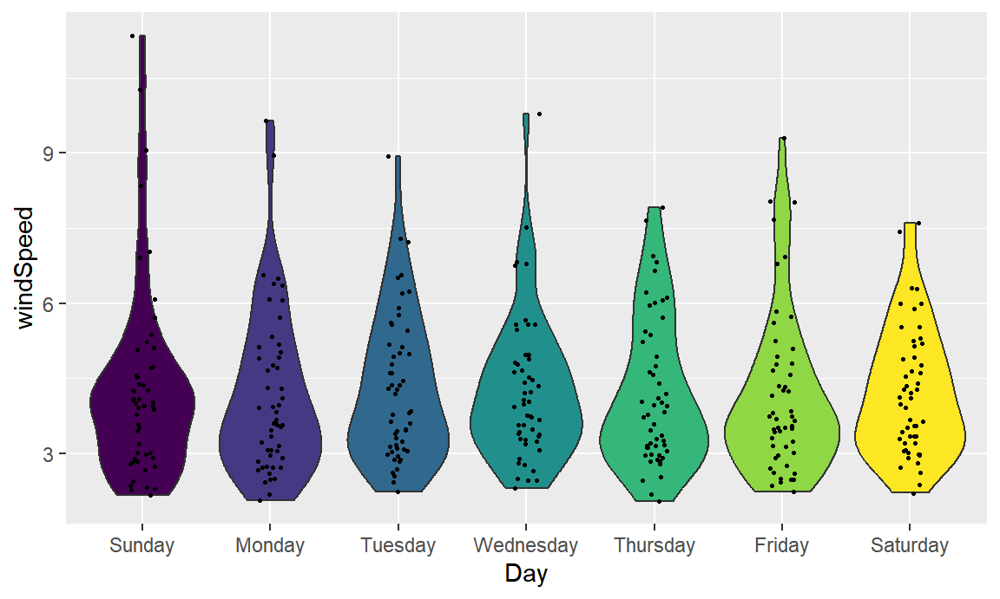
We can also add larger points for the daily averages. We’ll use a special layer for this: stat_summary(). It has a slightly different syntax, since we’re not actually mapping a column from the dataset. Instead, we’re feeding a column from a dataset into a function (here "mean") and then plotting that result:
We can also show the mean and confidence interval at the same time by changing the summary function:
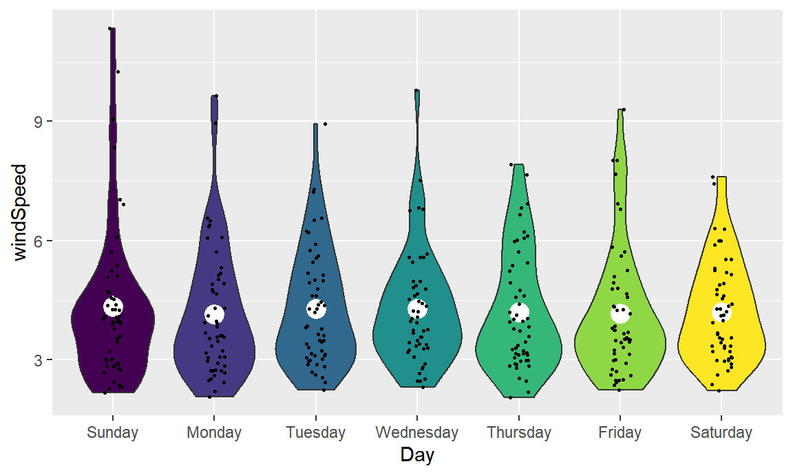
Overlaying the points directly on top of the violins shows extra information, but it’s also really crowded and hard to read. If we use the {gghalves} package, we can use special halved versions of some of these geoms like so:
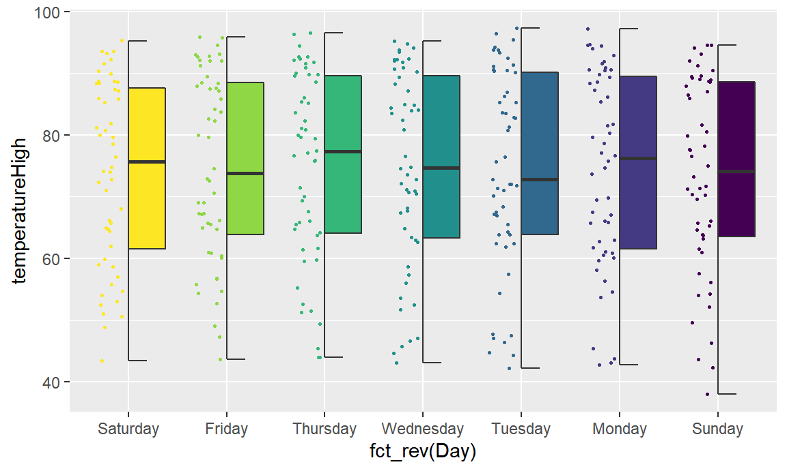
Note the side argument for specifying which half of the column the geom goes. We can also use geom_half_violin():
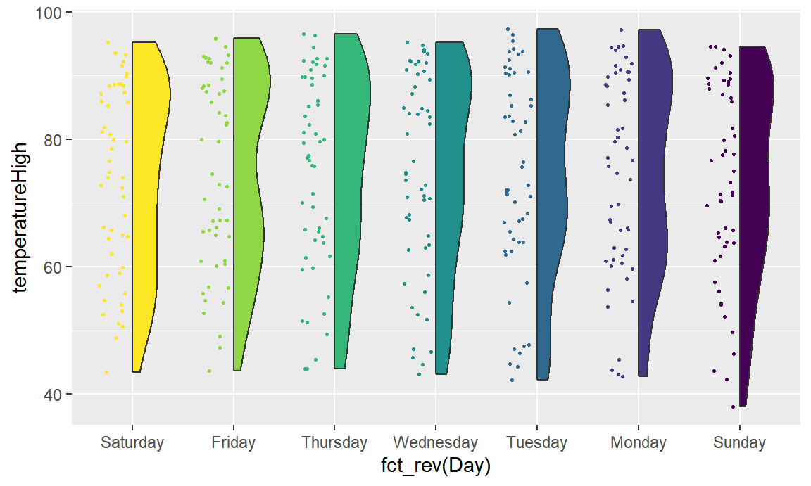
If we flip the plot, we can make a rain cloud plot:
ggplot(weather_atl,
aes(x = fct_rev(Day), y = temperatureHigh)) +
geom_half_boxplot(aes(fill = Day), side = "l", width = 0.5, nudge = 0.1) +
geom_half_point(aes(color = Day), side = "l", size = 0.5) +
geom_half_violin(aes(fill = Day), side = "r") +
guides(color = "none", fill = "none") +
coord_flip()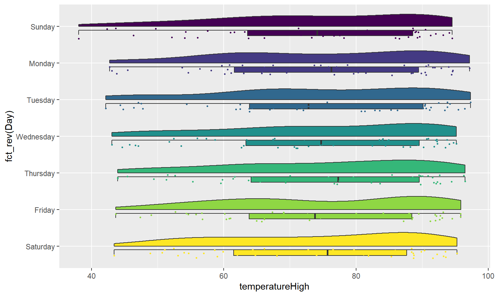
Neat!
---
title: "Uncertainty"
date: "2024-10-07"
date_end: "2024-10-11"
---
For this example, we're going to use historical weather data from the now-defunct [Dark Sky](https://darksky.net/forecast/33.7546,-84.39/us12/en) about wind speed and temperature trends for downtown Atlanta ([specifically `33.754557, -84.390009`](https://www.google.com/maps/place/33°45'16.4"N+84°23'24.0"W/@33.754557,-84.3921977,17z/)) in 2019. I downloaded this data using Dark Sky's (now-retired-because-they-were-bought-by-Apple) API using the [ {darksky} package](https://github.com/hrbrmstr/darksky).
If you want to follow along with this example, you can download the data below (you'll likely need to right click and choose "Save Link As…"):
- [{{< fa file-csv >}} `atl-weather-2019.csv`](/files/data/external_data/atl-weather-2019.csv)
## Live coding example
<div class="ratio ratio-16x9">
<iframe src="https://www.youtube.com/embed/40dW63jTbsk" allow="accelerometer; autoplay; encrypted-media; gyroscope; picture-in-picture" allowfullscreen="" frameborder="0"></iframe>
</div>
::: {.callout-important}
### Slight differences from the video
This is a slightly cleaned up version of the code from the video.
:::
```{r setup, include=FALSE}
knitr::opts_chunk$set(fig.width = 6, fig.height = 3.6, fig.align = "center", collapse = TRUE)
set.seed(1234)
```
## Load and clean data
First, we load the libraries we'll be using:
```{r load-libraries, message=FALSE, warning=FALSE}
library(tidyverse)
library(ggridges)
library(gghalves)
```
Then we load the data with `read_csv()`. Here I assume that the CSV file lives in a subfolder in my project named `data`:
```{r load-data-fake, eval=FALSE}
weather_atl_raw <- read_csv("data/atl-weather-2019.csv")
```
```{r load-data-real, include=FALSE, message=FALSE}
weather_atl_raw <- read_csv(here::here("files", "data", "external_data", "atl-weather-2019.csv"))
```
We'll add a couple columns that we can use for faceting and filling using the `month()` and `wday()` functions from {lubridate} (which was loaded as part of {tidyverse}) for extracting parts of the date:
```{r clean-data}
weather_atl <- weather_atl_raw %>%
mutate(Month = month(time, label = TRUE, abbr = FALSE),
Day = wday(time, label = TRUE, abbr = FALSE))
```
Now we're ready to go!
## Histograms
We can first make a histogram of wind speed. We'll use a bin width of 1 and color the edges of the bars white:
```{r basic-histogram}
ggplot(weather_atl, aes(x = windSpeed)) +
geom_histogram(binwidth = 1, color = "white")
```
This is fine enough, but we can improve it by forcing the buckets/bins to start at whole numbers instead of containing ranges like 2.5–3.5. We'll use the `boundary` argument for that. We also add `scale_x_continuous()` to add our own x-axis breaks instead of having things like 2.5, 5, and 7.5:
```{r basic-histogram-better}
ggplot(weather_atl, aes(x = windSpeed)) +
geom_histogram(binwidth = 1, color = "white", boundary = 1) +
scale_x_continuous(breaks = seq(0, 12, by = 1))
```
We can show the distribution of wind speed by month if we map the `Month` column we made onto the fill aesthetic:
```{r histogram-by-month}
ggplot(weather_atl, aes(x = windSpeed, fill = Month)) +
geom_histogram(binwidth = 1, color = "white", boundary = 1) +
scale_x_continuous(breaks = seq(0, 12, by = 1))
```
This is colorful, but it's impossible to actually interpret. Instead of only filling, we'll also facet by month to see separate graphs for each month. We can turn off the fill legend because it's now redundant.
```{r histogram-by-month-facet, fig.width=8, fig.height=4.8}
ggplot(weather_atl, aes(x = windSpeed, fill = Month)) +
geom_histogram(binwidth = 1, color = "white", boundary = 1) +
scale_x_continuous(breaks = seq(0, 12, by = 1)) +
guides(fill = "none") +
facet_wrap(vars(Month))
```
Neat! January, March, and April appear to have the most variation in windy days, with a few wind-less days and a few very-windy days, while August was very wind-less.
## Density plots
The code to create a density plot is nearly identical to what we used for the histogram—the only thing we change is the `geom` layer:
```{r basic-density}
ggplot(weather_atl, aes(x = windSpeed)) +
geom_density(color = "grey20", fill = "grey50")
```
If we want, we can mess with some of the calculus options like the kernel and bandwidth:
```{r density-kernel-bw}
ggplot(weather_atl, aes(x = windSpeed)) +
geom_density(color = "grey20", fill = "grey50",
bw = 0.1, kernel = "epanechnikov")
```
We can also fill by month. We'll make the different layers 50% transparent so we can kind of see through the whole stack:
```{r density-fill-by-month}
ggplot(weather_atl, aes(x = windSpeed, fill = Month)) +
geom_density(alpha = 0.5)
```
Even with the transparency, this is really hard to interpret. We can fix this by faceting, like we did with the histograms:
```{r density-facet-by-month, fig.width=8, fig.height=4.8}
ggplot(weather_atl, aes(x = windSpeed, fill = Month)) +
geom_density(alpha = 0.5) +
guides(fill = "none") +
facet_wrap(vars(Month))
```
Or we can stack the density plots behind each other with [{ggridges}](https://cran.r-project.org/web/packages/ggridges/vignettes/introduction.html). For that to work, we also need to map `Month` to the y-axis. We can reverse the y-axis so that January is at the top if we use the `fct_rev()` function:
```{r ggridges-basic, message=FALSE}
ggplot(weather_atl, aes(x = windSpeed, y = fct_rev(Month), fill = Month)) +
geom_density_ridges() +
guides(fill = "none")
```
We can add some extra information to `geom_density_ridges()` with some other arguments like `quantile_lines`. We can use the `quantiles` argument to tell the plow how many parts to be cut into. Since we just want to show the median, we'll set that to 2 so each density plot is divided in half:
```{r ggridges-quantile, message=FALSE}
ggplot(weather_atl, aes(x = windSpeed, y = fct_rev(Month), fill = Month)) +
geom_density_ridges(quantile_lines = TRUE, quantiles = 2) +
guides(fill = "none")
```
Now that we have good working code, we can easily substitute in other variables by changing the x mapping:
```{r ggridges-quantile-temp, message=FALSE}
ggplot(weather_atl, aes(x = temperatureHigh, y = fct_rev(Month), fill = Month)) +
geom_density_ridges(quantile_lines = TRUE, quantiles = 2) +
guides(fill = "none")
```
We can get extra fancy if we fill by temperature instead of filling by month. To get this to work, we need to use `geom_density_ridges_gradient()`, and we need to change the `fill` mapping to the strange looking `after_stat(x)`, which is a neat ggplot trick that tells it to use the variable we mapped to the x-axis. For whatever reason, `fill = temperatureHigh` doesn't work `r emoji::emoji("shrug")`:
```{r ggridges-gradient-temp, message=FALSE}
ggplot(weather_atl, aes(x = temperatureHigh, y = fct_rev(Month), fill = after_stat(x))) +
geom_density_ridges_gradient(quantile_lines = TRUE, quantiles = 2) +
scale_fill_viridis_c(option = "plasma") +
labs(x = "High temperature", y = NULL, color = "Temp")
```
And finally, we can get *extra* fancy and show the distributions for both the high and low temperatures each month. To make this work, we need to manipulate the data a little. Right now there are two columns for high and low temperature: `temperatureLow` and `temperatureHigh`. To be able to map temperature to the x-axis and high vs. low to another aesthetic (like `linetype`), we need a column with the temperature and a column with an indicator variable for whether it is high or low. This data needs to be tidied (since right now we have a variable (high/low) encoded in the column name). We can tidy this data using `pivot_longer()` from {tidyr}, which was already loaded with `library(tidyverse)`. In the Posit primers, you did this same thing with `gather()`—`pivot_longer()` is the newer version of `gather()`:
```{r tidy-weather}
weather_atl_long <- weather_atl %>%
pivot_longer(cols = c(temperatureLow, temperatureHigh),
names_to = "temp_type",
values_to = "temp") %>%
# Clean up the new temp_type column so that "temperatureHigh" becomes "High", etc.
mutate(temp_type = recode(temp_type,
temperatureHigh = "High",
temperatureLow = "Low")) %>%
# This is optional—just select a handful of columns
select(time, temp_type, temp, Month)
# Show the first few rows
head(weather_atl_long)
```
Now we have a column for the temperature (`temp`) and a column indicating if it is high or low (`temp_type`). The dataset is also twice as long (730 rows) because each day has two rows (high and low). Let's plot it and map high/low to the `linetype` aesthetic to show high/low in the border of the plots:
```{r ggridges-gradient-temp-high-low, message=FALSE}
ggplot(weather_atl_long, aes(x = temp, y = fct_rev(Month),
fill = after_stat(x), linetype = temp_type)) +
geom_density_ridges_gradient(quantile_lines = TRUE, quantiles = 2) +
scale_fill_viridis_c(option = "plasma") +
labs(x = "High temperature", y = NULL, color = "Temp")
```
Super neat! We can see much wider temperature disparities during the summer, with large gaps between high and low, and relatively equal high/low temperatures during the winter.
## Box, violin, and rain cloud plots
Finally, we can look at the distribution of variables with box plots, violin plots, and other similar graphs. First, we'll make a box plot of windspeed, filled by the `Day` variable we made indicating weekday:
```{r basic-boxplot}
ggplot(weather_atl,
aes(y = windSpeed, fill = Day)) +
geom_boxplot()
```
We can switch this to a violin plot by just changing the `geom` layer and mapping `Day` to the x-axis:
```{r basic-violin}
ggplot(weather_atl,
aes(y = windSpeed, x = Day, fill = Day)) +
geom_violin()
```
With violin plots it's typically good to overlay other geoms. We can add some jittered points for a strip plot:
```{r violin-strip}
ggplot(weather_atl,
aes(y = windSpeed, x = Day, fill = Day)) +
geom_violin() +
geom_point(size = 0.5, position = position_jitter(width = 0.1)) +
guides(fill = "none")
```
We can also add larger points for the daily averages. We'll use a special layer for this: `stat_summary()`. It has a slightly different syntax, since we're not actually mapping a column from the dataset. Instead, we're feeding a column from a dataset into a function (here `"mean"`) and then plotting that result:
```{r violin-strip-mean}
ggplot(weather_atl,
aes(y = windSpeed, x = Day, fill = Day)) +
geom_violin() +
stat_summary(geom = "point", fun = "mean", size = 5, color = "white") +
geom_point(size = 0.5, position = position_jitter(width = 0.1)) +
guides(fill = "none")
```
We can also show the mean and confidence interval at the same time by changing the summary function:
```{r violin-strip-mean-ci}
ggplot(weather_atl,
aes(y = windSpeed, x = Day, fill = Day)) +
geom_violin() +
stat_summary(geom = "pointrange", fun.data = "mean_se", size = 1, color = "white") +
geom_point(size = 0.5, position = position_jitter(width = 0.1)) +
guides(fill = "none")
```
Overlaying the points directly on top of the violins shows extra information, but it's also really crowded and hard to read. If we use [the {gghalves} package](https://github.com/erocoar/gghalves), we can use special halved versions of some of these geoms like so:
```{r gghalves-point-boxplot}
ggplot(weather_atl,
aes(x = fct_rev(Day), y = temperatureHigh)) +
geom_half_point(aes(color = Day), side = "l", size = 0.5) +
geom_half_boxplot(aes(fill = Day), side = "r") +
guides(color = "none", fill = "none")
```
Note the `side` argument for specifying which half of the column the geom goes. We can also use `geom_half_violin()`:
```{r gghalves-point-violon}
ggplot(weather_atl,
aes(x = fct_rev(Day), y = temperatureHigh)) +
geom_half_point(aes(color = Day), side = "l", size = 0.5) +
geom_half_violin(aes(fill = Day), side = "r") +
guides(color = "none", fill = "none")
```
If we flip the plot, we can make a [rain cloud plot](https://micahallen.org/2018/03/15/introducing-raincloud-plots/):
```{r gghalves-rain-cloud, fig.width=8, fig.height=4.8}
ggplot(weather_atl,
aes(x = fct_rev(Day), y = temperatureHigh)) +
geom_half_boxplot(aes(fill = Day), side = "l", width = 0.5, nudge = 0.1) +
geom_half_point(aes(color = Day), side = "l", size = 0.5) +
geom_half_violin(aes(fill = Day), side = "r") +
guides(color = "none", fill = "none") +
coord_flip()
```
Neat!